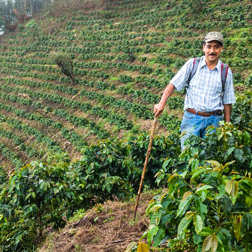

RISTERIET
RISTEPROCESS
Step 1
Bønnerne under den første risteproces.
Step 2
Bønnerne under den anden risteproces.
Step 3
De færdigristede bønner er klar til at blive leveret, kværnet, brygget og serveret på Mokkariet.
Kaffefarmen i Guatemala
Señor Juares
Manden, der sammen med resten af familien Juares ejer og driver kaffefarmen. Billedet her er fra El Guatelon-farmens højest belligende mark, kaldet La Loma (The Hill).

Bourbon-træerne
En Juares-medarbejder står og plukker friske kaffebær fra et Bourbon-træ. Det foregår i 1800 meters højde, to timers kørsel øst for Guatemala City.
Fra farm til kop
Hos Mokkariet får vi ristet og specialfremstillet alle vores bønner hos Copenhagen Roastery.
Kaffen, som du drikker på Mokkariet, er en esprosseblanding bestående af bønner fra tre kaffefarme i Brasilien, Kenya og Guatemala:
Datere Coffee Brasil
(Brasilien): Kaffefarmen blev etableret i 1902 og ligger i Cerrado-regionen i 900-1200 meters højde. Farmen beskæftiger over 1000 medarbejdere.
Ngurueri Factory Murue FCS
(Kenya): Kaffefarmen ligger i området Embu County og blev etableret i 1971. Farmen ligger i 1760 meters højde og beskæftiger 940 medarbejdere.
El Guatalon
(Guatemala): El Guatalon blev etableret i 1985. Farmen ligger i Santa Rosa-regionen i 1800 meters højde. 16-25 medarbejdere er beskæftiget på farmen.